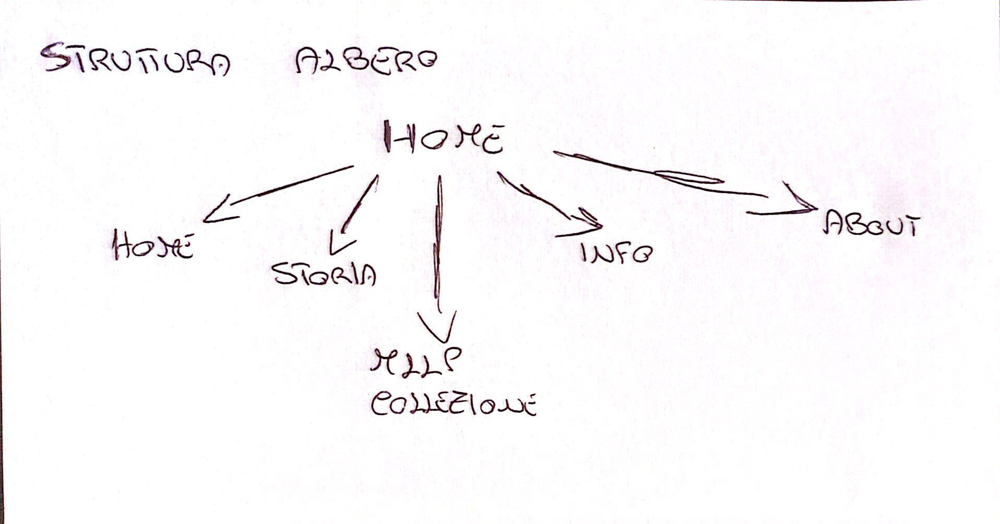
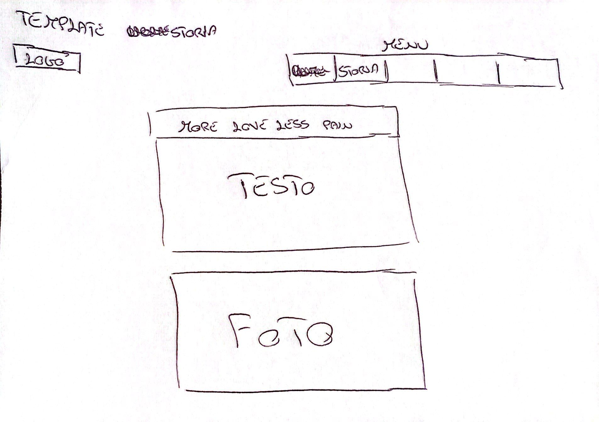
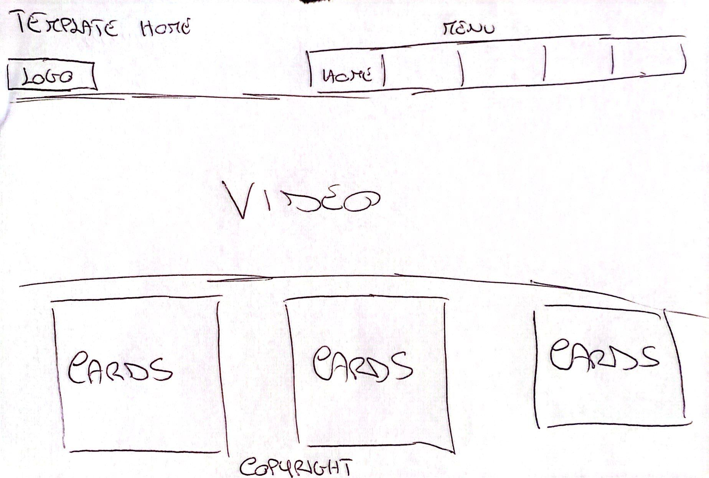
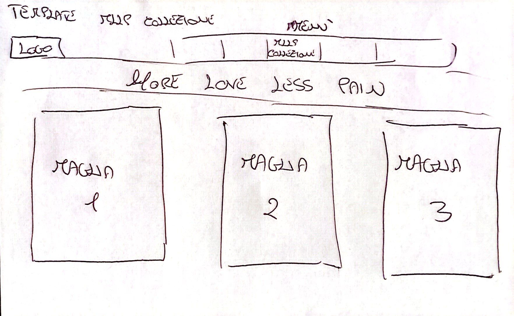
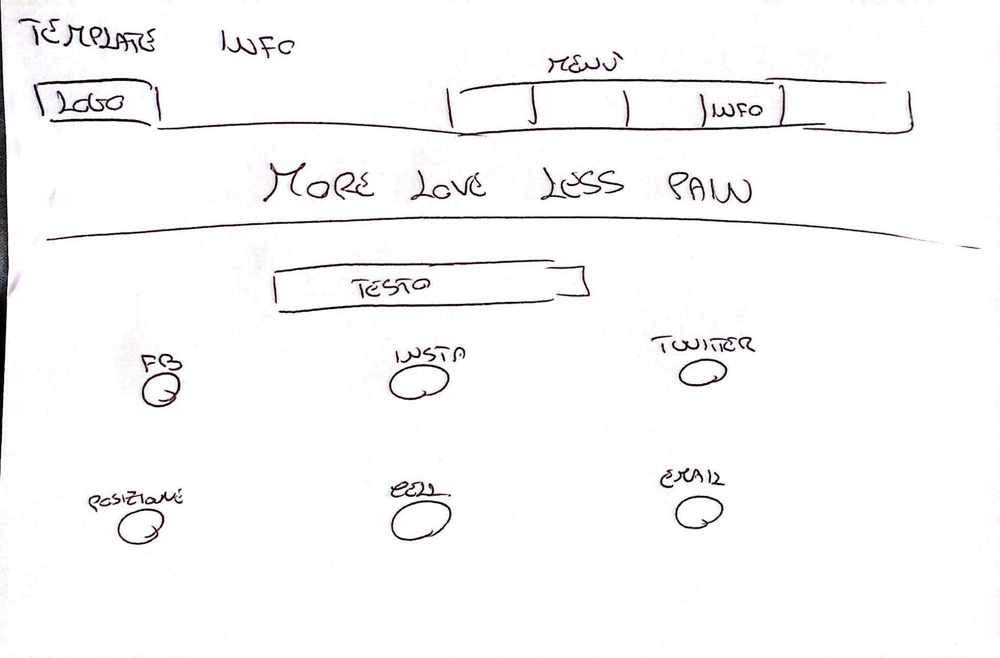
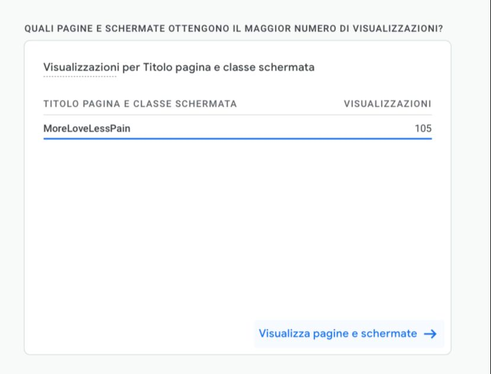
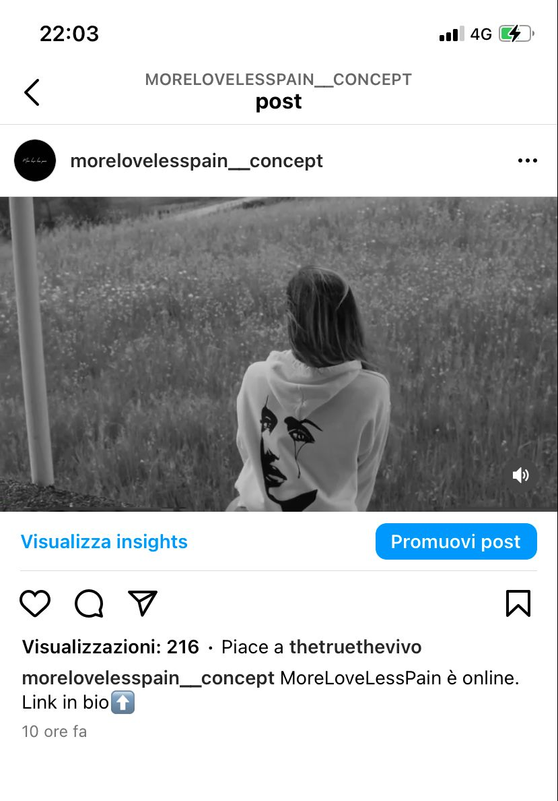
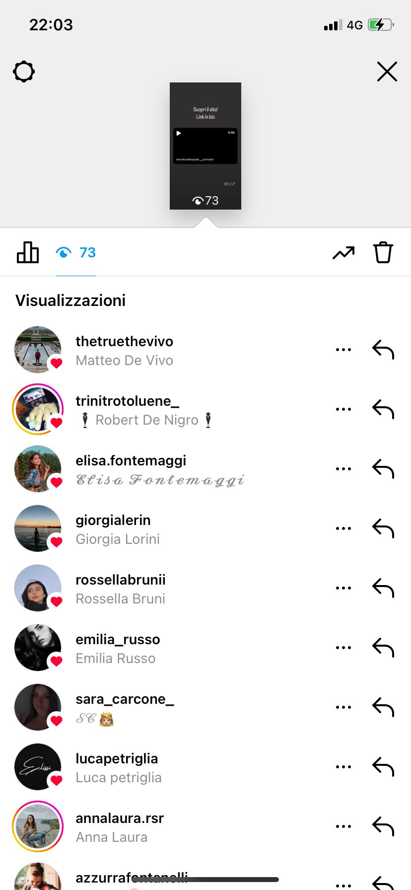
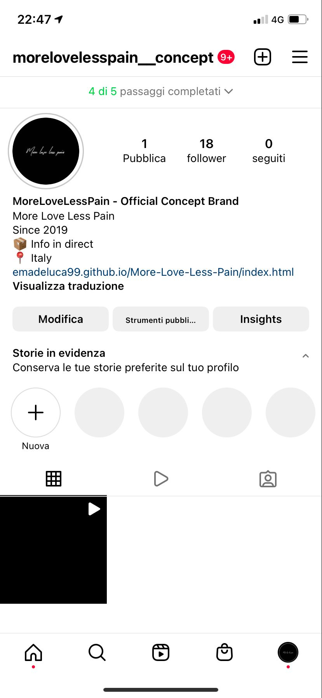

Il sito More Love Less Pain ha lo scopo di far conoscere a più persone possibili il brand nato quasi per gioco da qualche anno fra un paio di amici.
Non c’è mai stata una vendita ufficiale delle nostre maglie e speriamo che magari il sito essere un feedback più esteso per noi.
PROJECT MANAGEMENT PLAN:
1)Benchmarking:
OBIETTIVI:
L’obiettivo del sito è quello di permettere di far arrivare il sito a più utenti possibili.
TARGET UTENTE:
Ovviamente essendo un brand il target è quello dei ragazzi, da adolescenti a ragazzi più grandi, è una maglia comunque elegante, sia per la scelta dei colori che per lo stile della maglia. Le maglie sono adatte sia per ragazzi che ragazze.
COMPETITORS:
I siti di brand sono veramente molti, da quelli luxury come Gucci, Dior ai brand fast fashion come Zara, Bershka e H&M. Sono tutti strutturati allo stesso modo: in primo piano foto o video di modelli che indossano i capi dell’ultima collezione e poi troviamo sempre un menù a lato.
2)Struttura e layout
Il sito è strutturato con una home page iniziale che si apre con il video contenente il menù di navigazione che si mantiene in tutte le pagine e tre collegamenti.





LOOK AND FEEL:
Il sito presenta essenzialmente due colori: il bianco e il nero che sono i colori presenti sulle maglie. L’idea è quindi quella di brand che si fondi su pochi colori e che sia fine ed elegante. La stessa scelta è ricaduta ovviamente anche sul video.
LINGUAGGIO E STRUMENTI:
HTML, CSS E JAVASCRIPT per lo slider delle tre maglie.
Google font invece è stato utilizzato per i font.
Font Awesome per le icone utilizzate nella pagina ‘info’.
COMUNICATION STRATEGY:
Per pubblicizzare il sito ho utilizzato principalmente whatsapp, quindi spargendo la voce tra i miei amici e anche instagram, che è sicuramente uno dei social più efficaci per pubblicizzare un prodotto.
MESSAGGIO:
Nonostante il sito sia stato creato principalmente per un esame universitario, speriamo che questo possa essere l’inizio di un qualcosa di più grande.
PROMOZIONE:
In 24 ore con la pubblicazione del sito l’obiettivo è di raggiungere almeno 100 visite al sito.
Mentre per instagram
l'obiettivo è di 70 visualizzazioni alla storia pubblicata e 70 visualizzazioni al post pubblicato.
VALUTAZIONI FINALI:
Come dimostrato dagli screen qui sotto dopo neanche 24 ore sono riuscito a raggiungere i miei obiettivi, alcuni anche superati di molto.
Ho creato oggi stesso la pagina Instagram del brand, pubblicato il video che sponsorizza la maglia e pubblicata la storia.
L'obiettivo su Instagram è stato ampiamente superato, ho superato di gran lunga le 70 visualizzazioni del post, anche le visualizzazioni della storia sono andate oltre le 70.
Anche l'obiettivo delle visualizzazioni del sito è stato superato.



